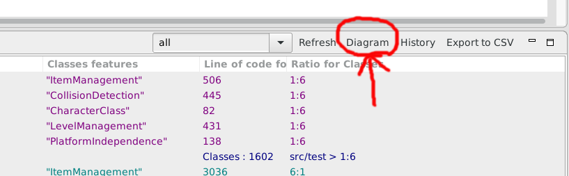
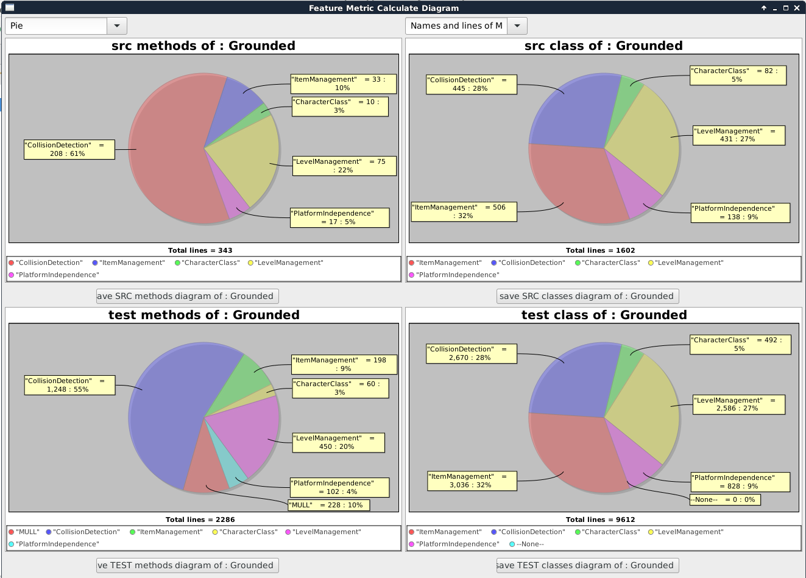
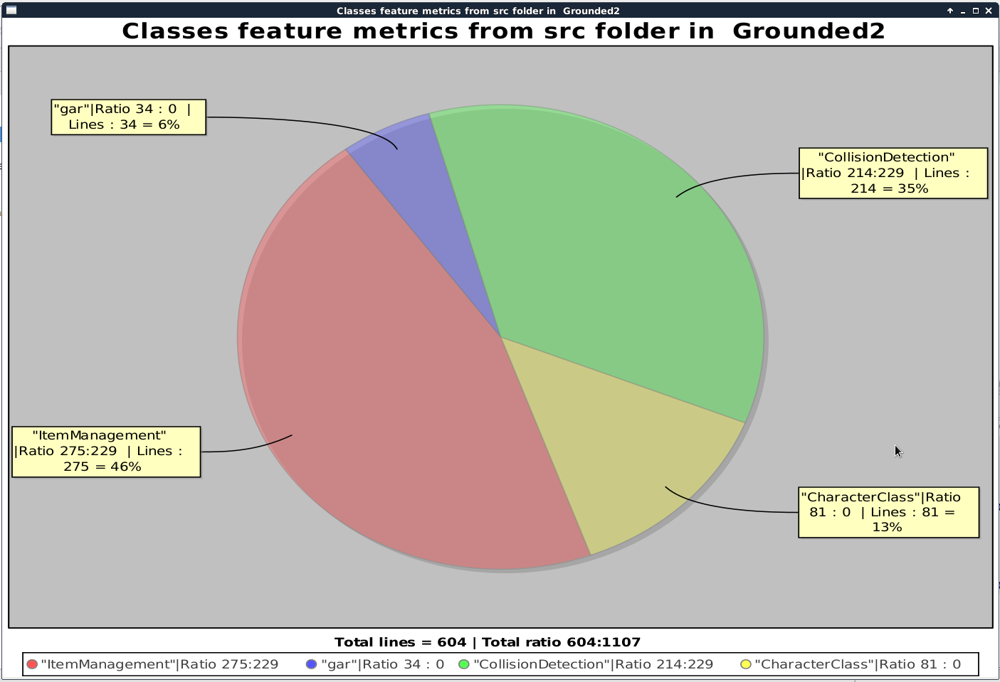

Diagram
By Clicking on the "Diagram" Button on the top right in the FMC View

another View which contains four charts will open.
The chart on the top right shows the Feature Methods and the on on the left shows the Feature Classes for the SRC Folder.
The same goes for the charts below which show the Feature for the TEST Folder of the Project.
Under every chart there is a Button to save the Diagram as JPEG.

Furthermore after a double click the selected chart will show on a bigger window
